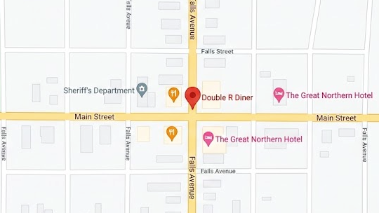

Visiting the diner
Opening Hours
The coffee pot is always full, and the grill is always on!
Where to Find Us

Intersection of Main Street and Falls AvenueTwin Peaks, WA Directions and Parking
Explore the diner
What's on the Menu?
Breakfast served from 06:00, sandwiches and dinners throughout the day, and five kinds of pie on offer. Decide what you're getting before you even sit down!
See the full menuOur Story
The same family has run the Double R for over three generations now. The booths are the originals, the pie is made every morning and half the town have sat at our counter at some point.
About the diner